车牌识别共享操作集中说明
多终端管理型停车场,即两台及上电脑管理的停车场,就需要配置加密狗和数据库共享.
单机管理型停车场,无需做共享操作.
原理:整个停车场只需要安装1个数据库和使用1个加密狗.
假如在A电脑上安装了数据库和插入加密狗,按照本说明完成共享设置,之后其它电脑就可以共享A电脑上的数据
库和加密狗,实现车辆从任何一个道口出去都能计算收费和查看图片.
注：本文只介绍软件层面上的共享操作,需要物理上网络互访支持.如果网络都不通,就谈不上共享了.
在进行操作前一定要关闭防火墙.
1.数据库共享操作
启用数据库TCP/IP协议,允许数据库共享.
开始->所有程序,找到"Microsoft SQL Server 2008 R2",再找到如下的配置管理器.
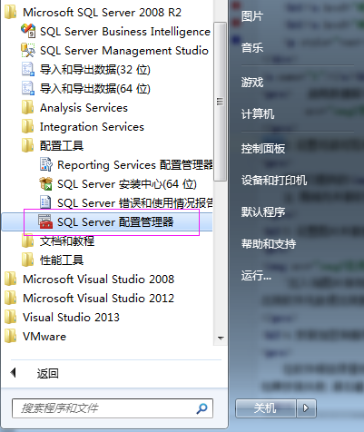
右健选择"启用".
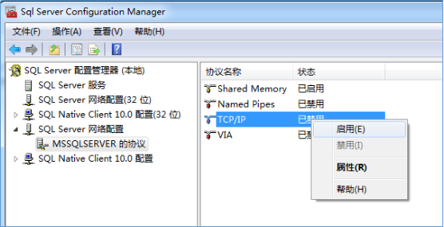
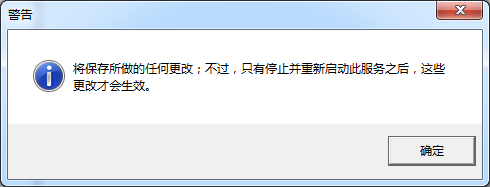
按  + R键,输入如下命令.
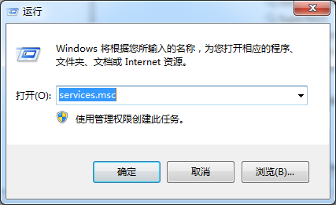
右健选择"重新启动".
+ R键,输入如下命令.
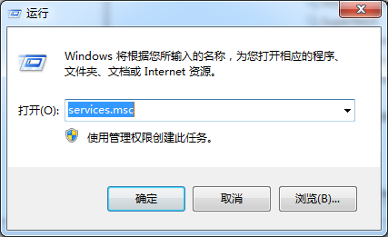
右健选择"重新启动".

2.设置可读可写共享文件夹
点此下载局域网共享工具
用我们提供的设置一个共享文件夹,具体操作方法请看里面的说明文档.
注:局域网共享软件可能会被主流杀毒软件认为是病毒,所以请先关闭杀毒软件再使用.
3.设置图片共享参数
打开车牌识别管理软件,在"车场公共属性配置"里设置出入场图片保存路径.
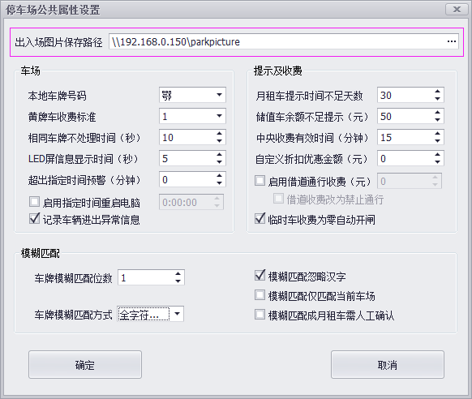
"出入场图片保存路径",填写设置的共享文件夹的网络路径,如:\\192.168.0.150\parkpicture.
出现软件无故退出现象,请先查看图片保存路径是否正确.
4.安装加密狗服务
在软件根目录里找到Service Setup,右键以管理员身份运行安装服务.
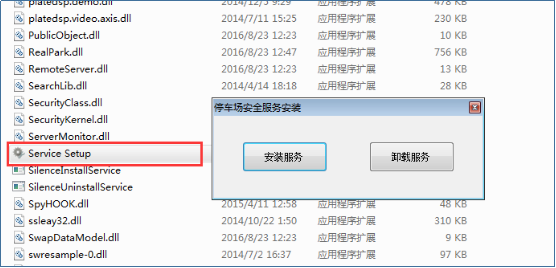
按 + R键,输入如下命令.
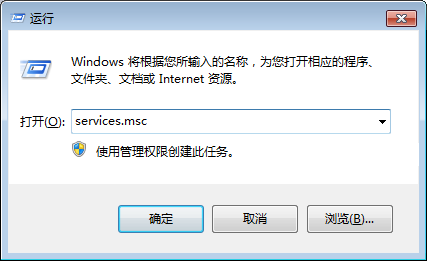
找到"ParkingService",查看启动类型和服务状态是否如下图所示.
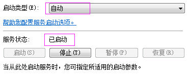
切换到"恢复"选项卡,将下列选项设置成"重新启动服务".
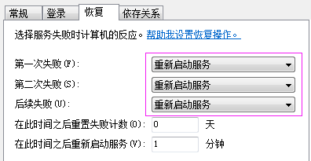
5.加密狗共享设置
在软件根目录找到"Confing"文件夹,打开"Confing Setting",更改"加密狗所在IP地址"这一项,在这里输入插
加密狗电脑的IP地址,点击保存退出.
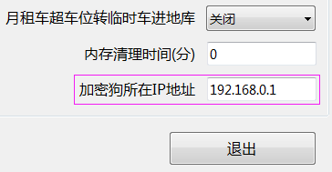
6.软件里数据库连接设置
在软件根目录找到"ParkUI"并打开它.
 首次开软件时会提示找不到数据库,点击"yes",设置连接参数.
服务器名称填SQL数据库所在电脑的IP地址,密码填安装数据库时设置的密码,点击连接测试,成功连接数据库之
后保存并退出.
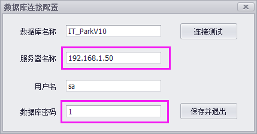
首次开软件时会提示找不到数据库,点击"yes",设置连接参数.
服务器名称填SQL数据库所在电脑的IP地址,密码填安装数据库时设置的密码,点击连接测试,成功连接数据库之
后保存并退出.
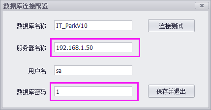